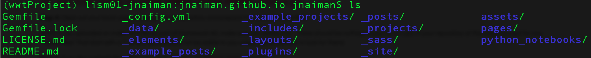

Jekyll & Page Installation Instructions
Installation instructions: Ruby, Ruby Gems, Jekyll & Our Online Resume Template
1. Install Jekyll, Ruby & bundler
Follow the links for your system below. NOTE: You will likely want to do this outside of your DataViz conda environment.
General notes
If you already have Ruby installed (i.e. the “system” Ruby) – make sure you check the installation instructions for your relevant system anyway – it’s possible you will want to install a non-system Ruby version.
If you already have Jekyll installed – make sure it’s the most recent version.
Pay attention if there are “next steps” listed after any of the commands, and make sure you do them.
For example, on a Mac after brew installs you’ll see:
==> Next steps:
- Run these two commands in your terminal to add Homebrew to your PATH:
echo 'eval "$(/opt/homebrew/bin/brew shellenv)"' >> /Users/jnaiman/.bash_profile
eval "$(/opt/homebrew/bin/brew shellenv)"
You need to run these two lines (echo and eval lines) in order to have the “brew” command in your path.
And after the Mac installation you’ll see the instructions (for the .zshrc shell its a little different):
echo "source $(brew --prefix)/opt/chruby/share/chruby/chruby.sh" >> ~/.bash_profile
echo "source $(brew --prefix)/opt/chruby/share/chruby/auto.sh" >> ~/.bash_profile
echo "chruby ruby-3.1.2" >> ~/.bash_profile # run 'chruby' to see actual version
Make sure you run these as well and re-open a Terminal window so that the relevant packages will be in your path or you can do source ~/.bash_profile (bash)/source ~/.zshrc(zsh).
Instructions for Macs
For Macs you may have to also install bundler: gem install jekyll bundler instead of just Jeykll (gem install jekyll), but first try to run the test webpage without this extra install and see if you get any errors.
See above notes about making sure to run a few things in your Terminal window after your install.
Tips & Tricks for Macs
- If you see
ld: symbol(s) not found for architecture arm64or something similar.- Try installing ruby with
ruby-install ruby -- --enable-shared
- Try installing ruby with
Instructions for Windows
Tips & Tricks for Windows
- Make sure you follow all the steps, all the way until the end of the page – you also have to do things like install bundler.
Instructions for Ubuntu Linux
Instructions for Non-Ubuntu Linux
2. Get Online Resume Template
Notes for Windows install:
- You need to have git installed - download link here. You will have to restart your computer.
For Mac, you should have git already installed (but you can install it here just in case).
Step 1: Download the online-resume template Jekyll page by clicking on this link here.
This should download a file, that can have a few different names, it might be called
online_cv_public-main.tar.gzmaster.tar.gzmain.tar.gz
Either way you will need to “unpack” this file in the step below.
Step 2: Unpack this gzip-ed tar ball in the “usual way” for your machine.
For example, on a Mac, if you are in the command line you could run tar -xvf online_cv_public-main.tar.gz (replace with the name of your downloaded tar/gzipped file)
You should now see a directory called online_cv_public-main which contains the following files:
3. Ready your github.io page for modifications
Step 1: If you have not downloaded (i.e. “cloned”) this repository to your local machine, now is the time to do this. The command you will use is:
git clone https://github.com/<GITHUB_USERNAME>/<GITHUB_USERNAME>.github.io.git
Step 2: Clear out your local copy of your github.io repository and prepare it to transfer these files.
NOTE: if you uploaded an index.html file as part of Homework #5, make sure you delete this – there should be nothing in your local copy of your repository at this stage (except for any “hidden files” that start with a “.”, which will probably not be visible to you unless you know how to look for them).
Step 3: Copy the contents from the unpacked online_cv_public-main directory to your cloned github.io repository.
Your github.io directory should now look like:

4. Host your webpage locally
Step 1: change to your github.io directory with cd <PATH_TO_LOCAL_REPO>/<GITHUB_USERNAME>.github.io.git in the Terminal/Anaconda Prompt
Step 2: In this directory, build the Jekyll page with bundle install in the Terminal/Anaconda Prompt

You should see this at the end of the bundle command.
Step 3: Serve the site locally with bundle exec jekyll serve

Step 4: Navigate to the URL listed in a Chrome or Firefox browser – in the above image this is http://127.0.0.1:4008/. You should see the following page pop up:

Step 5 – First part of submission: Take a screenshot of a side-by-side of your running Terminal/Anaconda Prompt and the served webpage like so:

This screenshot serves as your submission for this portion of the homework assignment.
5. Host your webpage remotely
Step 1: Push your local changes to your remote hosting page with git commands:
git status (check the additions to be made)
git add -A (add all changes)
git commit -m "upload template" (commit the changes)
git push (push all changes from local to remote site)
Step 2 – Second part of submission: Wait for your site to build (you can check the Environments tab or just keep refreshing your